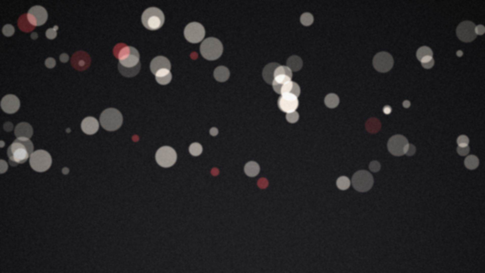
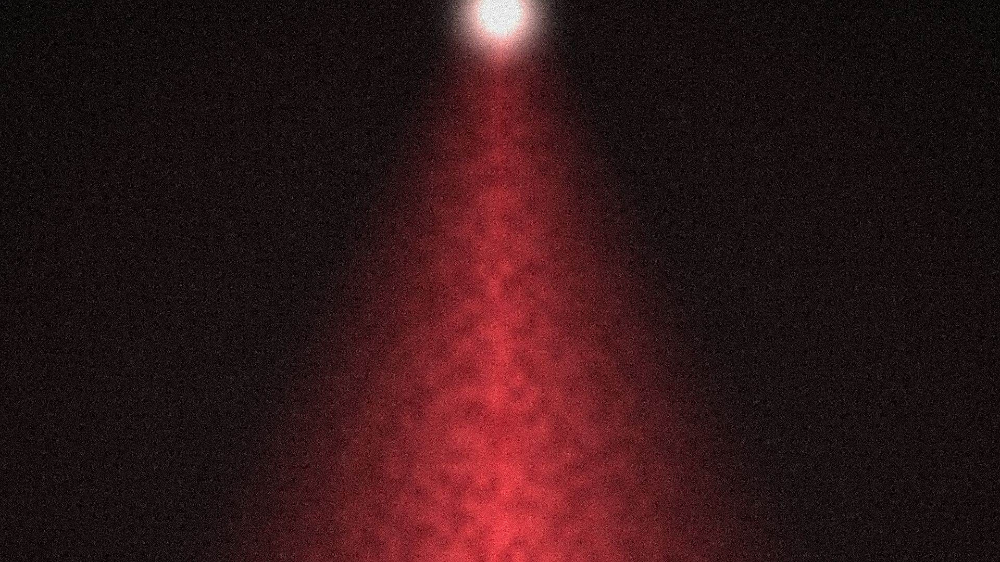
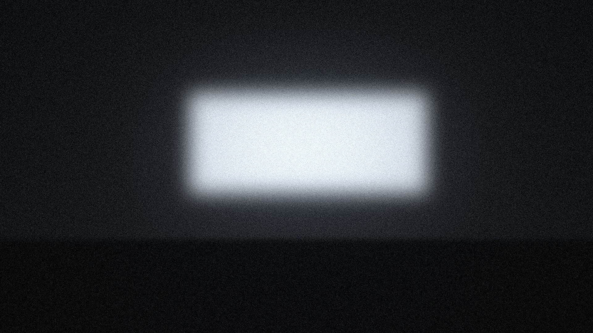

Do set ao ar



Toda produção começa com uma pergunta: o que esta história precisa para ser vista? A resposta está no roteiro, na luz, no corte e na hora certa de ir ao ar.
A UTV trabalha no ritmo da televisão. Prazo é prazo, o ao vivo não tem segunda chance e cada quadro precisa funcionar na primeira vez que alguém o vê.
Do institucional ao documentário, da campanha à transmissão ao vivo, o cuidado é o mesmo: direção atenta, imagem bem tratada e uma equipe que acompanha o projeto do primeiro rascunho à entrega.
Portfólio
Do roteiro ao ar
Uma equipe só, do primeiro rascunho à exibição, para o projeto não se perder entre fornecedores.
-
Etapa 1 de 3
Pré-produção
Antes de ligar a câmera: roteiro, direção de arte, escolha de locações e um plano de filmagem que cabe no prazo.
-
Etapa 2 de 3
Produção
No set e no estúdio: captação, iluminação, áudio direto, gravação com várias câmeras e transmissão ao vivo.
-
Etapa 3 de 3
Pós-produção
Na ilha de edição: montagem, correção de cor, motion graphics, trilha e mixagem, até a versão que vai ao ar.
O canal que nunca sai do ar
Programação própria, reprises e acervo no ar 24 horas por dia, na TV e no YouTube.
Assistir ao vivoOlhar de televisão, acabamento de cinema
A UTV é a central de produções da UniFil, em Londrina. Reúne pré-produção, gravação, transmissão e edição em um só lugar e atende clientes como a UniFil, o Colégio Londrinense, o Hub Turismo e a Animal Care.
Filmes institucionais, campanhas, documentários, eventos e um canal no ar 24 horas por dia.
Clientes
- UniFil
- Colégio Londrinense
- Hub Turismo
- Animal Care
- Hightea
- Semana Tecnológica
Fale com a produção
Conte o que você precisa. Respondemos no mesmo dia útil.